What makes it Quest Forge
Built, not assembled
Four things no other pack has. All of it in the open, on GitHub.
A hand-built questline
Twenty chapters. The numbered ones are the climb, and each opens when a boss dies: Witchery at the Naga, the End at the Hydra, TragicMC at Mobzilla. The rest are how you stay alive on the way up.
The climb → 81Enchantments you gamble for
None of them come from a table. Break the seal on a tome, drag the book onto your gear, and it rolls its own odds. A bad roll can shatter the item. Scrolls tilt the odds.
The full roster → 27Worlds to reach
The Twilight Forest, Witchery's three realms, OreSpawn's six, a dozen from the Legends packs, and the inside of a Compact Machine. Every one has its own painted loading screen.
All twenty-seven → 40blocksVoice chat, built in
The pack's own mod carries proximity voice: hold a key and anyone within forty blocks hears you, loudest up close. The same mod runs a jukebox that plays your own music, and lottery tickets that unlock commands.
How it works →Light and air
The pack's own shaders
Written from scratch for the pack's client. Near-photoreal light on unmistakably Minecraft geometry: realism from the sky, the sun, water and weather, never from smoothing away the blocks.
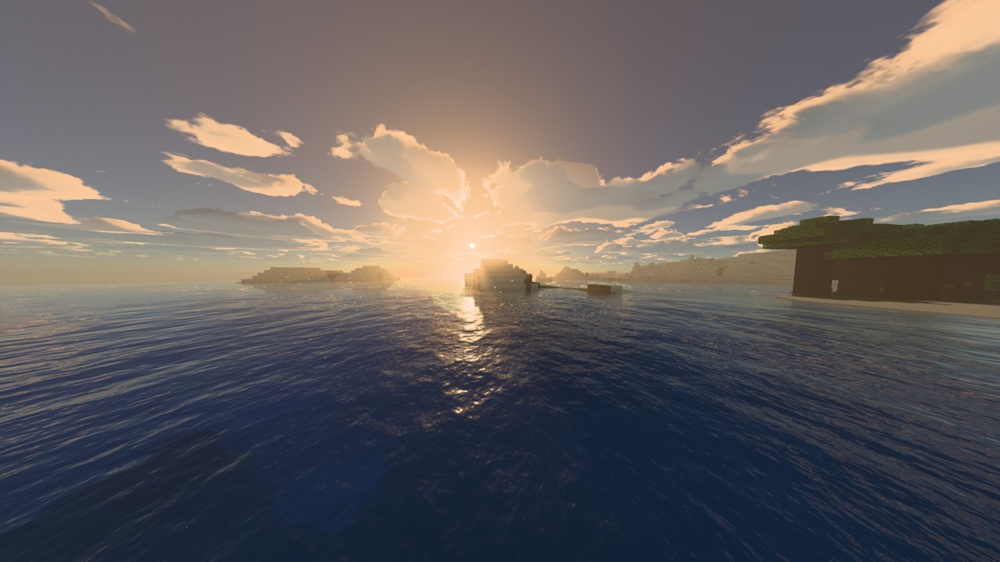
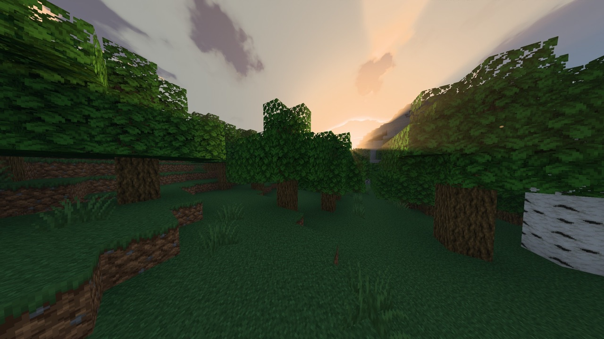

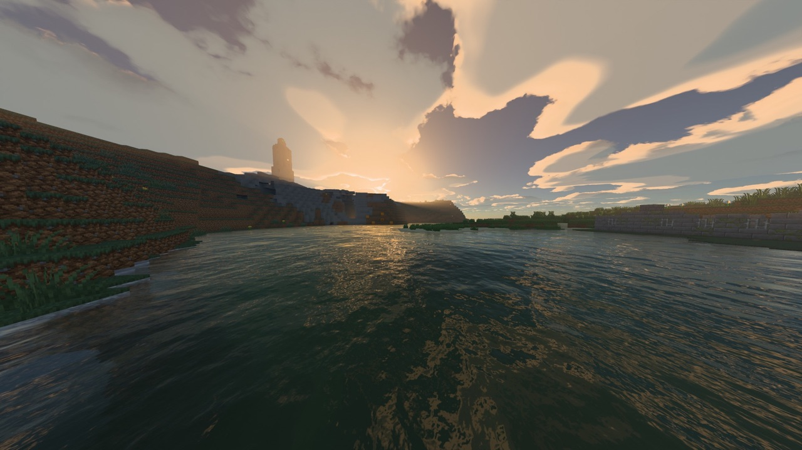
Readable darkness
Nights and caves are dark, never black. The floor scales with the moon, and a held torch works.
Calm exposure, neutral colour
No pumping when you look at the sky or a lamp, and no orange wash at golden hour. Wood, gold and sand are the test surfaces.
Modded blocks are first class
Modded leaves wave, lamps glow, ores glint, and every one of the pack's dimensions gets a sky and fog of its own.
Find your way
The pack, page by page
Everything on this site, and what each page is for.
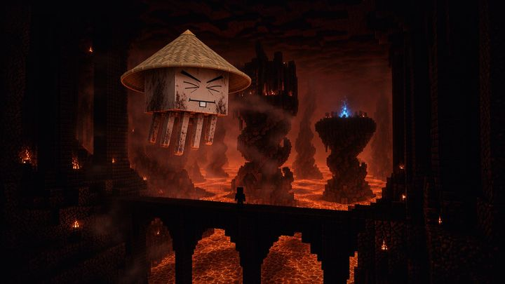
Get the pack
Seven steps from nothing to the title screen: the download, Java 8, Prism Launcher, the memory settings for your PC, a lighter profile for an older one, and what each refusal from the server means.
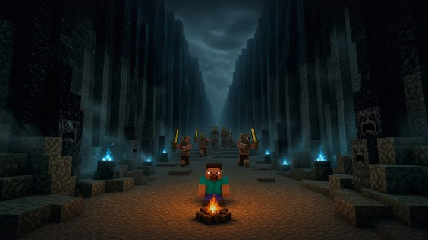
Your first night
Nobody chooses the first night. Walls, torches, the keys that matter, what comes out of the dark, and how to get your things back when it goes wrong.
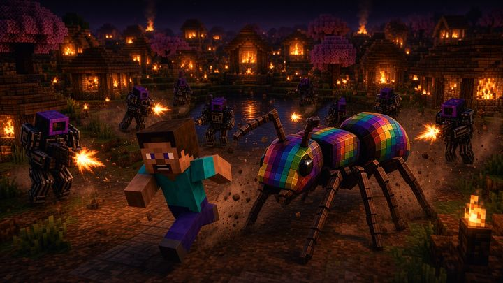
Item index
Every item in the pack with its real in-game icon. Search it the way you would NEI, follow recipes and uses, and see which quests ask for each one. Works offline once it has loaded.

Mod list
All 111 mods sorted into what they add: dimensions, bosses, magic, tech and gear, each with a line on what it actually does and a link to its items.
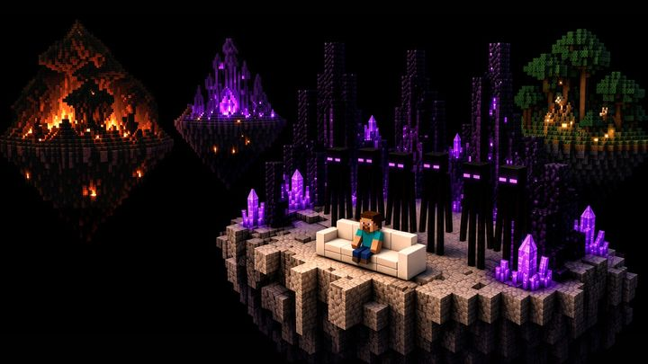
Worlds
All twenty-seven dimensions with their loading plates: which mod each comes from, the order the quest book opens them in, and the plates as wallpapers.

Enchantments
The 81 custom enchantments, the odds on every rarity from Common to Legendary, and the dust and scrolls that tilt a roll.

Ore atlas
Where every ore sits, dimension by dimension. Its figures come from an older mod set and will be measured again before the server opens, so treat them as rough.
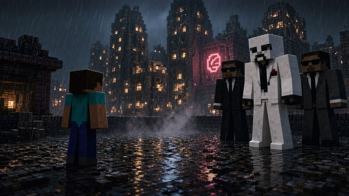
Who's online
The server's player list, live: who is on right now, when the server was last seen, and how its tick is doing.
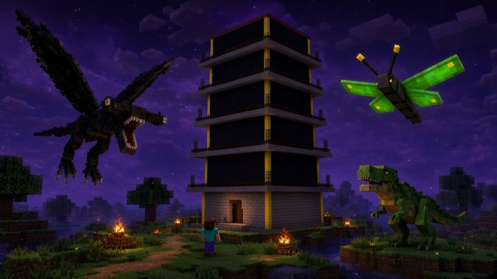
Break a Lucky Block
Every outcome the pack's own Lucky Block table can roll, with its odds, opened the way a CS:GO case opens.
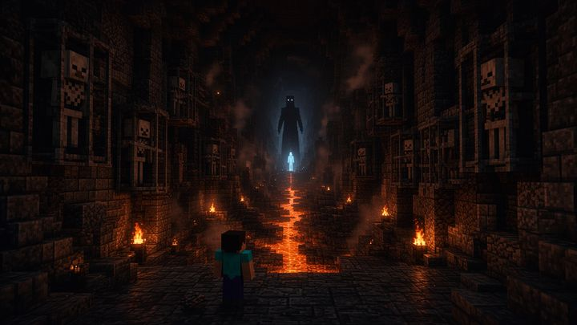
The Wall of Graves
Every death on the server as a gravestone, placed where it happened.
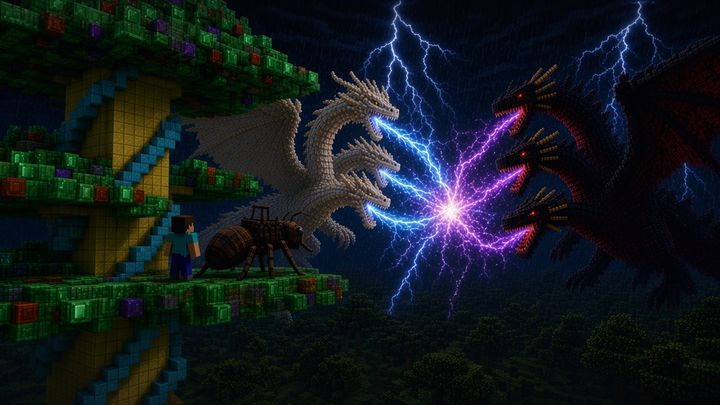
Players
A card for everyone on the server, and who killed each boss first.
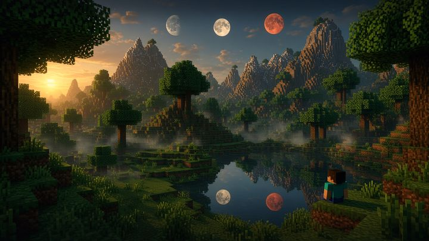
Decisions
The open calls on the pack, one card each: the options, our recommendation, and a tap to answer. Quest, balance, texture and server work waits on these.
The quest book
The climb
The numbered chapters, and what has to die before each one opens.
- 19 quests
Start
Wood, iron, diamonds. The overworld still kills people. Open from your first login.
- 27 quests
Base
A side chapter that opens with the first: drawers, iron chests, a handle that picks the whole box up.
- 39 quests
Twilight
Through a flower-ringed pool once you have diamond gear. The Naga, the Lich, the Hydra.
- 412 quests
Witchery
Opens once the Naga is dead, on purpose: you have a real kit now. Altars, poppets and circles.
- 57 quests
Dark Paths
Blood, moon, and the dimensions behind the veil. Opens at the Circle Talisman.
- 613 quests
The End
Not the vanilla End. Opens once the Hydra is dead and the Circle Talisman is made.
- 712 quests
OreSpawn
They came from beyond the void. Opens once you have found the Endstone Temple.
- 812 quests
TragicMC
Doom is a destination, and it has a road. Opens when Mobzilla is dead.
- 94 quests
ProjectE
The capstone, as a ladder: each rung opens at the boss its recipe needs, the Philosopher's Stone at the Lich.
From the chronicle
Diamond is how the book knows you are serious.Quartermaster
Side chapters
Open from the start and pay in utility and flavour, never the next chapter's power.
In numbers
312 quests in 20 chapters. Boss quests count the kill for the whole party, and retrieval never takes the item from you, so one proof can be handed round. The book is still being rebuilt into acts; what's here is what ships today.
Loading screens